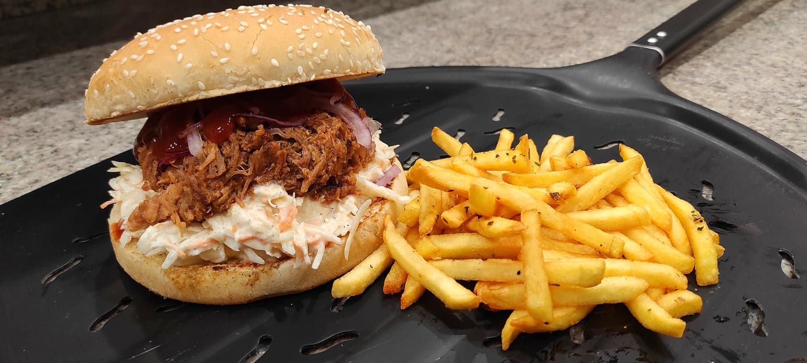

Tatár Beefsteak

Paprikás krumpli

Pulled pork szendvics
Üdvözöljük a B&H Kulinária oldalán!
Készülj fel egy ízlelőbimbóidnak szóló utazásra! Bodó Kristóf és Horváth Levente szakácsmesterek gondoskodnak arról, hogy minden falat igazi élvezet legyen. Ételeink egyszerűen elkészíthetők, mégis lenyűgözően finomak, és minden alkalomra tökéletesek.
Fedezd fel a B&H Kulinária varázsát, és engedd, hogy a legfinomabb ízek elkápráztassanak!